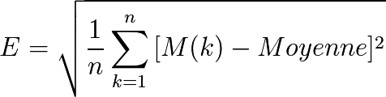

Principle of psychological resonance. Bubbles are only a consequence of the asymmetrical monetary issuance
The issuer of asymmetrical money has his own view of value, which is potentially not compatible with the ones of the other members of the economic area.
By doing so, he will have a tendency to privilege what he thinks is an absolute value, and thus to issue credits about the production and the sells of this specific value. He supplies only the benefit to himself (thanks to the interests) and for the producer by resonance effect (benefit by overrating and sell), looser being the last buyers of the value before its ineluctable drop.
We are here a part of asymmetrical monetary issuance on a fundamental principle of psychological resonance which can be summarized by :
« The economy is waiting for visibility on the monetary policy, which waits for visibility on the economy »
Principle at the basis of the phenomenon of bubbles and systematic crisis by construction, of monetary systems which do not understand the relativity principle.

Evolution over time of pseudo « values » by arbitrary issuance of « debt money »
Theoretical development
Let’s suppose a specific value dVs = Pf × dCf is growing (dVs > 0). The credits issuer will supply the production and the purchase of this value with new credits dMf to get a benefits out of it, proportionally to this value, and so, for this specific value :

This « growth » reaches a limited maximum, whether by control of the global monetary expansion by the authorities, or by market saturation. At this time, the value starts to stabilize globally, if not to drop. The drop will be related to the excess of money invested in this sector, which will have produce an excess of unsolvable production.
Arise then a problem to refund the credits allocated to the issuer, which, as it can not be done, will have to be the subject of a renewal of the credit excessively allocated, which constitutes in fine a lasting monetary creation in time. It is an advantage monstrously asymmetrical of the producer of this value specific to the relation with the other economic actors who even if they identified the values to produce and trade, are deprived unilaterally from their part of the necessary monetary tool.
One should really understand in the field of value the indebtedness of the « last buyers », following the explosion of the bubble, which is due to the asymmetrical creation and arbitrary of credits. It is not allocated to solve problems of the three producers and the circularity of the trade of value inside economy, but only on the basis of « expanding values », creating then an inherent resonance. Let’s see the evolution of the bubble in the field of value with an example.
a) A monetized value is identified by the arbitrary credits issuer having equities
b) The arbitrary credits issuer allocates then credit lines to the producer of this value, and to the purchasers, by doing so he creates a field distortion in his favor, credits and interests being « due ». Initially the value « increase » suddenly because of the local injection of credits.

a) Initial capital equity (Luc Fievet RTM 2.0)
c) The issuer of arbitrary credits stops his injection, because he credits another value he chose, or because he gets to the maximum credits issuance possible (he reached his maximum permitted leverage) which is the case of the big systemic crisis (the leverage effect is globally reached by the whole system, and one can not create more money anymore legally with this advantage). At this time, the force of interests and credits refund makes « the bubble burst » which can not feed itself of the injection of new credits.
d) It remains at the end of the « cycle » an arbitrary credits issuers who « sucked » most of the preexisting money because of the payment of the interests, and so has realized a benefit, and a sector of production of value where not only last purchasers are with a superior debt to the value they bought, but where the one producer is charged with a mechanically produced debt by a due total refund (capital + interests) superior to the local growth of the money.

b) The credits issuer by leverage creates additional money which feeds a producer arbitrary selected.(Luc Fievet RTM 2.0)
This local phenomenon is obviously exactly the same at a global level, the end of a cycle being at this level the moment where the whole banking sector has emitted all possible credit reaching its maximum leverage, and so where even by identifying some new values to vamp they don’t have legally the right to do it. This is then the whole economic area which is found trapped before a refund force superior to the global growth rate of the money.

c) Refund force of arbitrary emitted and allocated credit (Luc Fievet RTM 2.0)
Thus whatever be the value created in the economy of a centralized monetary system, the benefit always goes to the asymmetrical credit issuers with a null risk, because even if the producers go bankrupt, and the credits are not refunded, the system has to bail out the credits issuer if it do not want to see the whole economy totally paralyzed.
This asymmetrical model is a system where, at a minimum risk the money creator gets the maximum benefits, and at a maximum risk one only gets the minimum benefits (and most often a forced bankruptcy) for the producers
This is fundamentally different from investment with money accumulated beforehand, which is also an influx of money in a determined sector, but without insurance of fixed interests, without playing with the monetary mass, so without being realized to the detriment of the rest of the economy, and with a true risk of loss without harming globally the economy (money accumulated and invested is debt to no one).

Forced bankruptcy by progressive money dry-up, and capture of any value by the issuing center (Luc Fievet RTM 2.0)
Experimental verification
The theoretical reasoning can be verified by studying global bubbles for which there are measures of global monetary mass controlled by the issuing center constituted of the private Banks (leverage) and Centrals. In this asymmetrical monetary system, periods where a beginning of concentration of monetary flux is found, is over-fed by a creation of money of resonance.
To see this effect on experimental data, we are going to calculate the standard deviation on an average of 12 months, of the growth of monetary masses M3 in Europe and United-States. The standard deviation in statistic mathematics, represents the effects of deviation from the average, which is a very good way to view a resonance effect.

We perceived here very clearly that expansions and crisis are pure effects of monetary resonance, M3 € did go through pushes of monetary creation very far onto its average during the crisis of 2000 and 2008 years.
And for M3 US$, on a period even longer, we obtain indications on longer periods where we see the resonance of monetary expansions with the big « economic » crisis, which are only the effect of the principle of psychological resonance in a system of asymmetrical creation of money.
For M3 € we get the following :

Standard deviation on 12 months of the growth of M3 € 1998 - 2010
There is capture of the money created arbitrarily on monetary flux identified by actors of these resonance expansion, at the expense of the rest of the economy.
Not only the rest of the economy is excluded from this monetary creation by resonance, but it will go through a devaluation of its share of money by delayed effect, when this influx of new money will go back to the economic circuits. Thus the actors of the monetary center will share the money issued recently, then benefit of the advantages of the first purchaser at the lowest price. When they take possession of lasting economic value, inflation of prices will follow this influx of money, and the other economic actors will be cheated out twice, first by the creation a central money of which they are excluded, then in a second time by the inflation provoked by the progressive purchase of economic goods with this money.
The issuing center plays, thus, by construction, against the interest of the sum of the others economic actors.

Standard deviation on 12 months of the growth of M3 $ 1958 - 2010